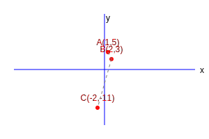
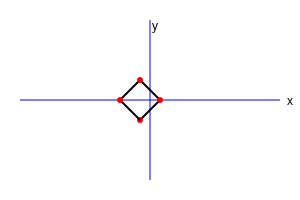

Example 1. Do the points (3, 2), (-2, -3) and (2, 3) form a triangle? If so, name the type
of triangle formed.

Let \(P(3, 2)\), \(Q(-2, -3)\) and \(R(2, 3)\).
\(PQ = \sqrt{(-2-3)^2 + (-3-2)^2} = \sqrt{(-5)^2 + (-5)^2} = \sqrt{50} \approx 7.07\)
\(QR = \sqrt{(2-(-2))^2 + (3-(-3))^2} = \sqrt{4^2 + 6^2} = \sqrt{16+36} = \sqrt{52} \approx
7.21\)
\(PR = \sqrt{(2-3)^2 + (3-2)^2} = \sqrt{(-1)^2 + 1^2} = \sqrt{2} \approx 1.41\)
Since sums of any two sides > third, they form a triangle.
Also \(PQ^2 + PR^2 = 50 + 2 = 52 = QR^2\).
Yes, they form a Right-Angled Triangle.
Example 2. Show that the points (1, 7), (4, 2), (-1, -1) and (-4, 4) form a square.

Let \(A(1, 7), B(4, 2), C(-1, -1), D(-4, 4)\).
\(AB = \sqrt{(4-1)^2 + (2-7)^2} = \sqrt{9+25} = \sqrt{34}\)
\(BC = \sqrt{(-1-4)^2 + (-1-2)^2} = \sqrt{25+9} = \sqrt{34}\)
\(CD = \sqrt{(-4-(-1))^2 + (4-(-1))^2} = \sqrt{9+25} = \sqrt{34}\)
\(DA = \sqrt{(1-(-4))^2 + (7-4)^2} = \sqrt{25+9} = \sqrt{34}\)
Diagonals: \(AC = \sqrt{(-1-1)^2 + (-1-7)^2} = \sqrt{4+64} = \sqrt{68}\)
\(BD = \sqrt{(-4-4)^2 + (4-2)^2} = \sqrt{64+4} = \sqrt{68}\)
Since sides are equal and diagonals are equal, it forms a square.
Example 3. Find the coordinates of the point which divides the line segment joining (4,
-3) and (8, 5) in the ratio 3 : 1 internally.

Let \(P(x, y)\) divide AB in 3:1.
\(x = \frac{3(8) + 1(4)}{3+1} = \frac{24+4}{4} = \frac{28}{4} = 7\)
\(y = \frac{3(5) + 1(-3)}{3+1} = \frac{15-3}{4} = \frac{12}{4} = 3\)
Point P is (7, 3).